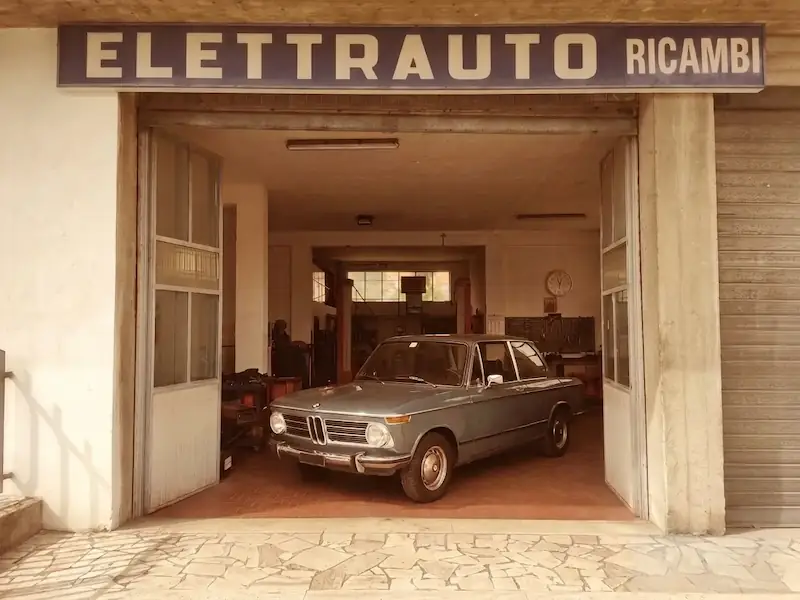
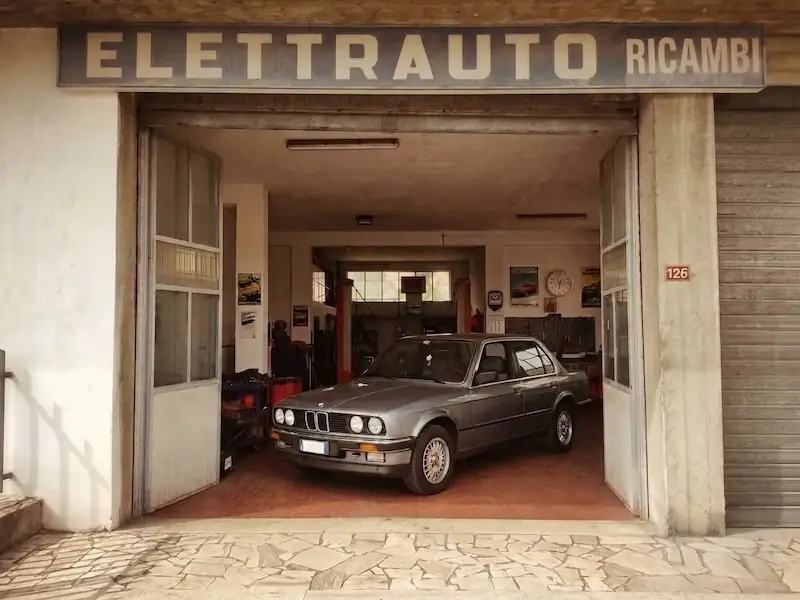
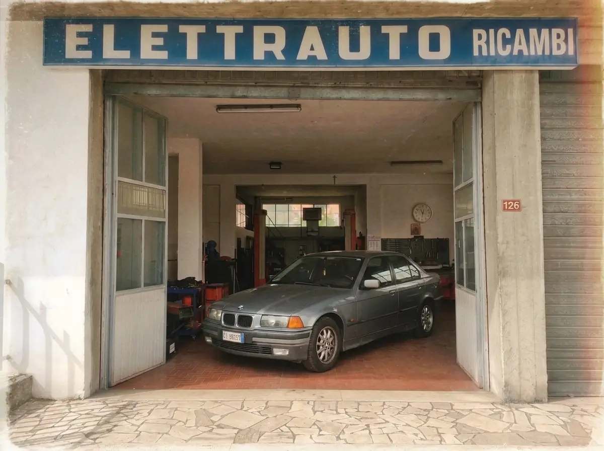
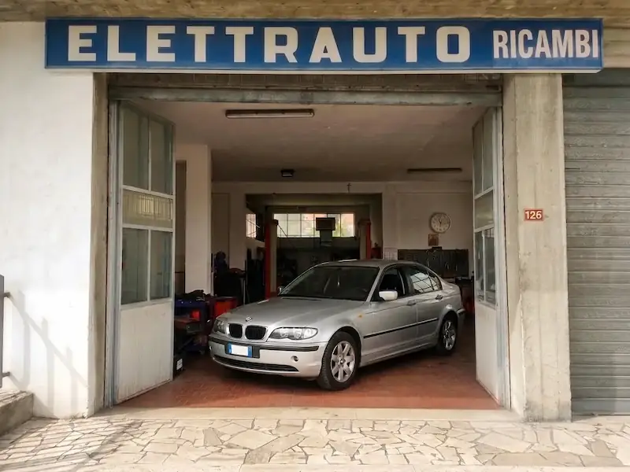
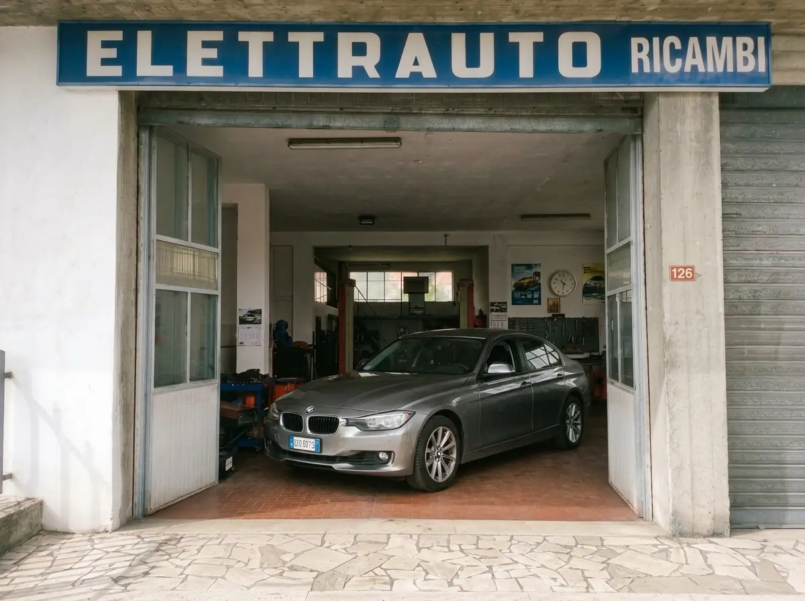
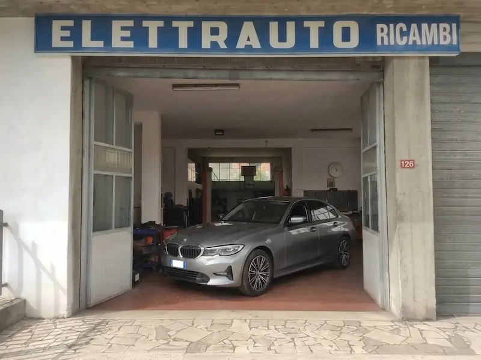
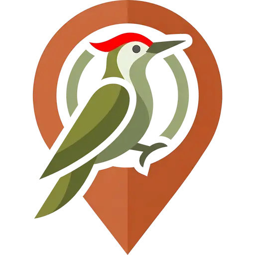

Elettrauto
Giuseppe Lelli
Diagnosi elettriche auto, riparazioni, assistenza e soccorso nella vallata del Tronto.
Più di 50 anni
di passione
Una storia di famiglia che attraversa tre generazioni, dalla prima apertura nel 1973 alla gestione attuale di Giuseppe. Un'officina di paese che da oltre cinquant'anni è punto di riferimento per l'elettrauto nella vallata del Tronto, a due passi da Castorano e Offida.






Le origini
L'officina viene aperta da Erminio e Maria, i genitori di Peppe, con passione e dedizione.
Imparare il mestiere
Peppe cresce in officina e impara fin da ragazzino lavorando fianco a fianco con la famiglia.
Peppe al timone
Giuseppe gestisce da solo l'attività, portando avanti con la stessa passione di sempre una mole di lavoro notevole.
Cosa dicono i clienti
Recensioni Maps · 4,3Un grande!
Sempre pronti a tutto!
Peppe è gentile e fa il suo.
Positività e professionalità.
Servizi offerti
Dalla diagnostica elettronica al soccorso sul posto con booster.
Diagnostica elettronica OBD
Diagnosi elettronica dei principali sistemi del veicolo tramite strumenti professionali.
Diagnosi e spie
Lettura dei codici errore e verifica delle anomalie segnalate dal quadro strumenti.
Impianto elettrico
Fari e lampadine (alogene, xenon, LED), fusibili, relè e riparazione di cablaggi, cortocircuiti e problemi di massa.
Elettronica di bordo
Alzacristalli, chiusure centralizzate, tettucci apribili, specchietti e accessori elettrici.
Avviamento e ricarica
Batteria (controllo, ricarica, sostituzione), motorino di avviamento e alternatore: riparazione e sostituzione.
Soccorso con booster
Se la tua auto non parte nella zona, Peppe lascia l'officina e ti raggiunge sul posto per rimetterla in moto. Un servizio d'emergenza per non lasciarti a piedi.
Dove e quando
trovarci
- Lunedì – Venerdì 8:30 – 12:30 · 15:00 – 19:30
- Sabato 8:30 – 12:30
- Domenica Chiuso
Dovendo gestire da solo tutto il carico lavorativo può capitare che Peppe non risponda al telefono avendo costantemente le mani impegnate. Suggeriamo di lasciare un messaggio su WhatsApp se non è un'emergenza.
L'officina si trova lungo Via Salaria al civico 126, presso la frazione San Silvestro di Castorano (AP): esattamente a fianco al rivenditore di auto Senesi Car Srl, in prossimità della rotatoria del bivio per Offida.
Buono a sapersi
Pagamento in contanti alla consegna
Peppe è tendenzialmente una persona gentile, quando sbriga il lavoro in pochi istanti può capitare che non chieda soldi ma apprezzi un buon caffè offerto in uno dei due bar vicino all'officina.
Vuoi risparmiare?
Il portale dei migliori servizi nel Piceno.

Guida Picena è un portale affidabile dei migliori servizi di Ascoli Piceno e dintorni: ricambisti, meccanici, officine, elettrauto e professionisti di ogni settore, tutti selezionati nella zona. Tutto quello di cui hai bisogno a portata di mano!
Come funziona: per alcuni interventi puoi risparmiare acquistando il ricambio da un ricambista della zona e portandolo in officina, pagherai solo la manodopera. Peppe si occuperà dell'installazione, come sempre.
Guida Picena è un progetto indipendente e gratuito, promosso senza fini commerciali.
Informazioni sul sito
Avviso
Questo non è un sito web ufficiale. Si tratta di un progetto della community a scopo informativo. Non possiamo peraltro garantire l'assoluta accuratezza di ogni informazione. Per qualunque dubbio contattare direttamente l'officina.
Il progetto
Ideato e sviluppato da Matteo Pompei nei ritagli di tempo per aiutare il nostro Peppe costantemente oberato di lavoro ed eventuali clienti che si sentono smarriti e non sanno a chi rivolgersi.
Il progetto è open source e il codice sorgente è aperto a tutti, contribuisci su GitHub.